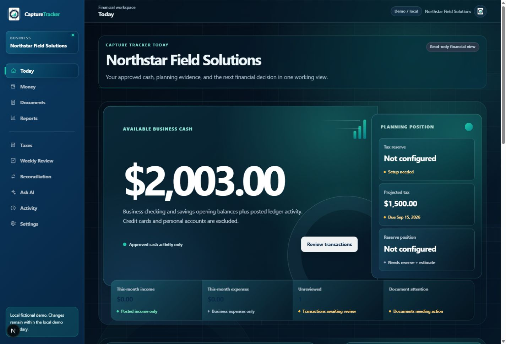
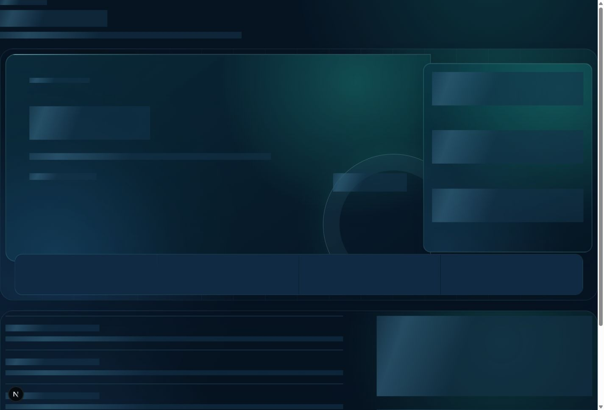
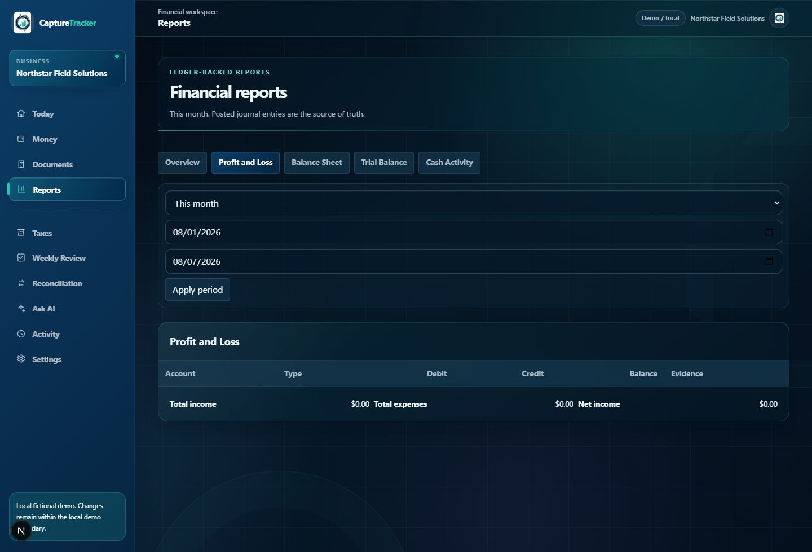

CAPTURE TRACKER
Product Manual
SPENDING TRACKED. BUSINESS GROWN.
Start here
Use the private URL supplied by the owner. Sign in with your existing email and password. In an initialized production workspace, Create account is intentionally unavailable; ask the owner to arrange access. There is no self-service password reset.
Navigation
Desktop: Today, Money, Documents, Reports, Taxes, Weekly Review, Reconciliation, Ask AI, Activity, Settings. Mobile: Today, Money, Documents, Reports, More; More contains the remaining workflows.
Today
A read-only briefing of Available Business Cash, tax planning, income/expenses, review work, documents, Weekly Review, and recent activity.

Money and Documents
Money records and reviews balanced financial activity. Documents stores private evidence. Upload PDF, JPEG, or PNG up to 10 MiB; camera photos are normalized on-device before upload and PDFs remain unchanged. A document stays private while its security scan is pending and refreshes automatically to Ready, rejected, or a safe failure state. Only Ready documents can be opened, linked, or used for extraction/matching. Suggestions never change accounting automatically. Removal revokes access immediately where no protected accounting relationship exists.

Reports
Profit and Loss, Balance Sheet, Trial Balance, and Cash Activity use complete database-backed totals. Supporting detail can paginate without making totals partial. CSV exports protect against formula-like cell content and may safely refuse a large request.

Taxes, review, and reconciliation
Taxes presents planning facts only; it does not file or pay taxes, run payroll, determine salary, or replace a CPA. Weekly Review records acknowledgement without hiding unresolved work. Reconciliation matches existing activity and finalizes only at $0.00 difference; matching never creates another transaction.
Ask AI, Activity, and Settings
Ask AI is read-only and intentionally unavailable in real-data production until an approved provider exists. Activity is the read-only history of material actions. Settings supports default report period, Weekly Review day, and document-retention target; changes are recorded in Activity.
Mobile and safety
Use Safari Share → Add to Home Screen or Chrome menu → Add to Home screen to create a browser shortcut, not an app. Allow the camera only to photograph receipts. Sign out on shared devices.
Screenshot provenance
All local-demo images are genuine captures from the repository local fictional demo. Public-production images are unauthenticated landing/sign-in pages only.